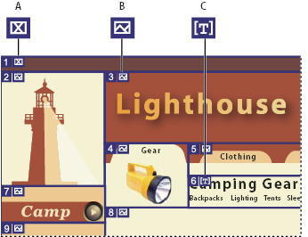

About slices
Web pages can contain many elements—HTML text, bitmap images, and vector graphics, to name a few. In Illustrator, you can use slices to define the boundaries of different web elements in your artwork. For example, if your artwork contains a bitmap image that needs to be optimized in JPEG format, while the rest of the image is better optimized as a GIF file, you can isolate the bitmap image using a slice. When you save the artwork as a web page using the Save For Web & Devices command, you can choose to save each slice as an independent file with its own format, settings, and color panel.
Slices in an Illustrator document correspond to table cells in the resulting web page. By default, the slice area is exported as a image file that is enclosed in a table cell. If you want the table cell to contain HTML text and a background color instead of an image file, you can change the slice type to No Image. If you want to convert Illustrator text to HTML text, you can change the slice type to HTML Text.

- A.
- No Image slice
- B.
- Image slice
- C.
- HTML Text slice
You can view slices on the artboard and in the Save For Web & Devices dialog box. Illustrator numbers slices from left to right and top to bottom, beginning in the upper left corner of the artwork. If you change the arrangement or total number of slices, slice numbers are updated to reflect the new order.
When you create a slice, Illustrator slices the surrounding artwork into automatic slices to maintain the layout using a web-based table. There are two types of automatic slices: auto slices and subslices. Auto slices account for the areas of your artwork that you did not define as a slice. Illustrator regenerates auto slices every time you add or edit slices. Subslices indicate how overlapping user-defined slices will be divided. Although subslices are numbered and display a slice symbol, you cannot select them separately from the underlying slice. Illustrator regenerates subslices and auto slices as needed while you work.